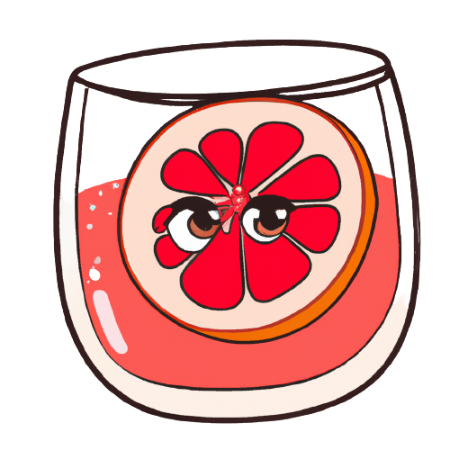
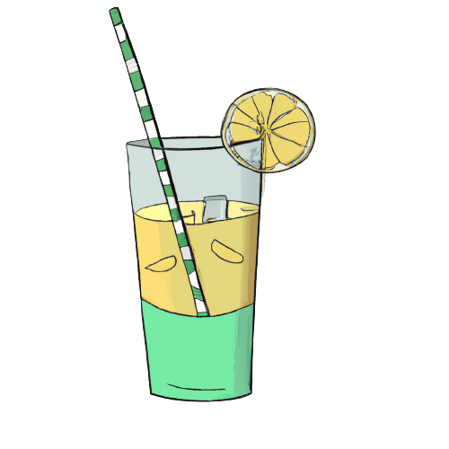
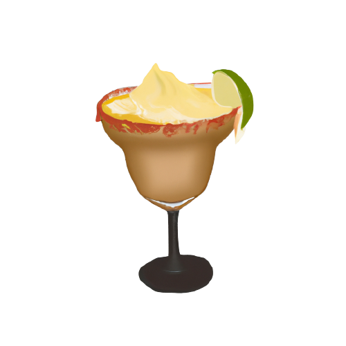

Найпопулярніші напої Мексиканської кухні
-
Хорхата
Хорхата - це традиційний напій Мексики, який виготовляється з насіння хорхати (або тигрового горіха), води, цукру та спецій, таких як кориця, ваніль та кардамон. Насіння хорхати мають солодкий та гострий смак і додають унікального аромату та смаку цьому напою.
Хорхата може бути подана холодною або зі льодом і є дуже популярним напоєм в Мексиці, особливо в штатах Пуебла та Оахака. Цей напій часто продається вуличними торговцями та на ринках, де його можна купити в різних розмірах та упаковках.
 -
Лимонад
Один з найпопулярніших безалкогольних напоїв Мексики - це лимонад (aguas frescas), який може бути виготовлений з різних фруктів та овочів, таких як ананас, ківі, арбуз, диня, манго, яблука та груші. Ці напої зазвичай приготовляються шляхом змішування свіжих фруктів або овочів з водою та цукром, або іншим солодким сиропом.
 -
Мокко-Маргарита
Мокко-маргарита (Margarita Mocktail) - це безалкогольна версія одного з найпопулярніших коктейлів Мексики - маргарити. Цей напій має солодкий та кислуватий смак з легкою гірчинкою та солоністю, що робить його дуже освіжаючим та приємним для споживання.
 -
Атол
Атол - це традиційний напій Мексики, який зазвичай приготовляється з кукурудзяного борошна, води та цукру. Це безалкогольний напій, який можна знайти в багатьох країнах Латинської Америки та Карибського басейну, де він називається за різними назвами, такими як ато́ле, атоладо, атолі́ко та інші.
Для приготування атолу, кукурудзяне борошно (майже завжди білого кольору) змішується з водою та цукром, і потім постійно помішуючи нагрівається на плиті до стану густої крем-пасти. Іноді до складу додають корицю, ванілін або інші прянощі, щоб змінити смак напою.